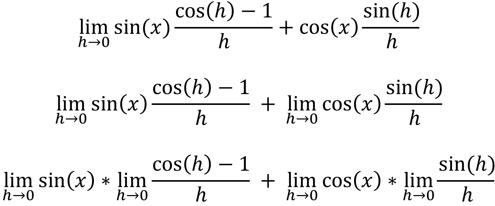

For this proof, it must be clear to you that [limx->0 sin(x)/x = 1], and that [limx->0 (cos(x) - 1)/x = 0]. You must also know how to expand sin(a + b), if you don't, then click here. By definition, the derivative of sin(x) would be:
If we expand sin(x + h):
If we keep simplifying it further:
We know that [limh->0 (cos(h) - 1)/h = 0], [limh->0 sin(x) = sin(x)] and [limx->0 sin(x)/x = 1], so:
Hence we have proved that the derivative of sin(x) is cos(x).